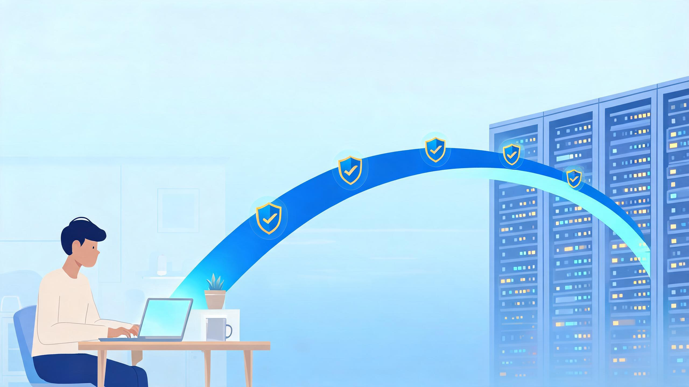

励联 LiLink 让你安全访问公司内网的电脑、软件和数据。公司服务器不开放任何公网入口，黑客无从下手，远程访问照样畅通。

传统远程方案的痛点，我们换了一种思路。
很多远程方案要在公司服务器上"开一扇门"（公网端口），这扇门也可能被黑客和勒索病毒利用。励联的服务器一扇门都不开，从根上杜绝入侵入口。
两台电脑之间直接建立专属通道，数据不绕道第三方服务器。绝大多数情况下都能直连成功，访问速度和在公司办公室没差别。
不同公司使用同一套系统，但数据、设备、账号完全隔离。你的内网资源只有你们公司的人能看到、能连上。
不用找网管改路由器、不用申请固定 IP，普通员工自己就能搞定。
公司里那台电脑装"服务端"角色，你自己的笔记本或手机装"客户端"角色，用公司发的账号登录即可。
比如"访问公司电脑上的财务系统 9123 端口"，界面上填一下就行，改了立即生效，不用重启。
浏览器打开 127.0.0.1:本地端口，就像坐在公司电脑前一样操作业务系统。
提供手机 App（支持苹果风格的全屏玻璃设计），出差路上也能随时查看和操作公司系统。
通道数据全程加密（银行级 AES 加密算法），即使被恶意截获也看不到内容。
客户端最小化后收进托盘静默运行，电脑重启也不丢配置，随时都在线。
财务软件、ERP、NAS、远程桌面……想访问几个就加几条规则，还能指定访问内网其他电脑。
网络切换、短暂断网后自动重连，不用手动重启程序，连接状态一目了然。
服务端可以设置"只允许访问哪些内网电脑"，白名单之外一律拒绝，防止误用和滥用。
在家访问公司电脑上的 OA、ERP、共享文件，体验和坐在工位上一样。
金蝶、用友等只装在公司电脑上的单机软件，在外地照样正常开单。
运维人员在外面远程登录公司服务器做管理，服务器不用暴露任何公网端口。
调取录像、翻阅共享盘，不用公网 IP、不用 DDNS，手机上就能看。